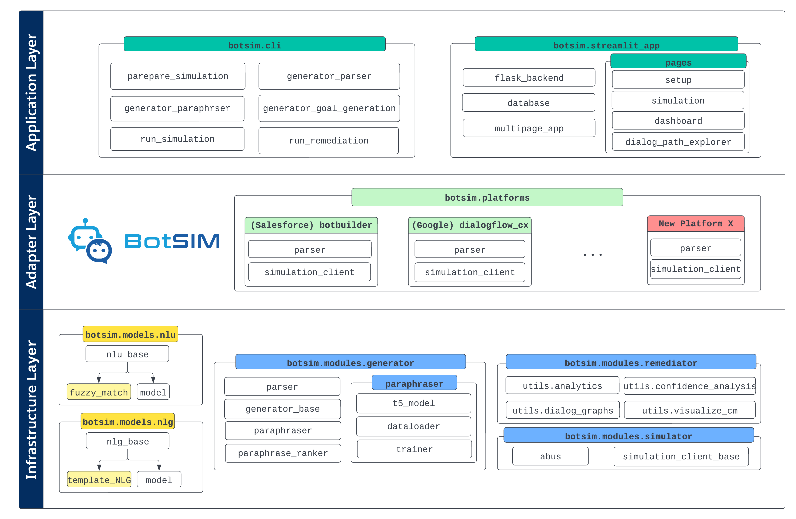

BotSIM System Design¶
The key design principles of BotSIM include modularity, extensibility and usability. These principles allow BotSIM to be adopted both by developers as a framework and bot end-users as an easy-to-use application. To achieve these, BotSIM adopts a layered design comprising the infrastructure layer, the adaptor layer and the application layer as shown in the figure below.
{kind=link}
Infrastructure Layer¶
The infrastructure layer is designed to offer fundamental model support for the framework. BotSIM’s generation-simulation-remediation pipeline is powered by the models and components that reside in this layer.
botsim.modelscontains BotSIM’s NLU and NLG models. From a dialogue system perspective, BotSIM can be viewed as a counterpart to a chatbot: it needs to “understand” chatbot messages (NLU) and “respond” in natural languages (NLG). Currently, fuzzy matching-based NLU and template-based NLG models are provided for efficiency reasons. Developers can also incorporate more advanced NLU and NLG models (see the advanced usages section).botsim.modulesconsists of the three key modules to power BotSIM’s “generation-simulation-remediation” pipeline.botsim.modules.generatorprovides two major functionalities: 1) theparserparses the input bot designs in the form of either metadata (Einstein BotBuilder) or API (DialogFlow CX) to infer the dialog-act maps (BotSIM’s NLU); 2) the large pre-trained language model basedparaphrasergenerates paraphrases from the input intent utterances. These paraphrases are used as intent queries in the simulation goals to probe bots’ intent models, which allows BotSIM to perform large-scale data-efficient bot evaluation even before bots are deployed.botsim.modules.simulatorimplements the dialog-act level agenda-based user simulation inabus. It also defines a simulation API client interface insimulation_client_base.botsim.modules.remediatoranalyzes the simulation dialogs and produces the performance metrics and conversational analytics to support the dashboard visualisation.
Adaptor Layer¶
The adaptor layer is designed for bot developers to extend BotSIM to new bot platforms. To cover new bot platforms, the following two most important platform-specific modules of the layer must be implemented. Note the implementations of these functions are highly platform-dependent. They require the developers to have access to bot platform, design and API documents to understand how bots are designed and how user inputs are elicited by the bots. There is also need to constantly revisit the implementations to incorporate new features that might be missed in the current implementations. We have provided some recipes in the advanced usage section.
parseracts as an “adaptor” to unify bot definitions (e.g. dialog flows, intents/tasks) from different platforms to a common representation of dialog act maps.simulation_clientis the other platform-dependent component for BotSIM to exchange conversations with bots via APIs. Similar to theparser, the client implementation heavily depends on the API designs of underlying bot platforms.
Application Layer¶
The application layer is designed to significantly flatten the learning curves of BotSIM for both bot developers/practitioners and end-users.
botsim.clicontains a set of command line tools for practitioners to learn more about the major BotSIM components. Thegeneration-simulation-evaluationpipeline has been split into multiple stages to expose the required inputs and expected outputs for each stage. They serve as basic building blocks for bot practitioners to build their customized pipelines or apply only certain tasks rather than the whole BotSIM pipeline.botsim.streamlit_appis a multi-page easy-to-use Web app designed for direct application by bot end users such as bot admins without diving into technical details. The app can be deployed as a docker container to cloud platforms for access to more computation resources. We use Streamlit for the App front-ends. Flask backend APIs are implemented to encapsulate major BotSIM functionalities. The app is also equipped with a SQL database to store simulation stages and keep track of simulation performance across multiple platforms.
Extending BotSIM to New Bot Platforms¶
Bot developers can extend BotSIM to new platforms by implementing their platform-dependent adaptors including parsers and API clients.
Parser¶
The parser interface is defined in generator.parser and has the following important functions.
1. extract_local_dialog_act_map function generates a “local” dialog act map by ignoring incoming and output transitions.
In other words, the local map only considers the messages/actions explicitly defined within the dialog. These local dialog act maps are modelled as graph nodes during
the subsequent conversation graph modelling. In particular, the messages for the two special dialog acts,
namely “intent_success_message”and “dialog_success_message” are also generated here according to heuristics discussed before.
2. conversation_graph_modelling models the entire bot design as a graph. Each individual dialog is represented by its local dialog act maps and included as the graph nodes.
Transitions among dialogs are modelled as the graph edges. The graph modelling is based on the networkx package.
There are two outputs from the function: the final dialog act maps and the graph data for conversation path visualisation.
3. parse function defines a general parser pipeline starting from parsed local dialog act maps.
def parse(self): # extract local dialog act maps which are later modelled as graph nodes local_dialog_act_maps = self.extract_local_dialog_act_map() self.dialog_act_maps, self.conv_graph_visualisation_data = self.conversation_graph_modelling(local_dialog_act_maps) self.dialog_with_intents_labels = set(self.dialog_act_maps.keys()) self.dialog_ontology, self.customer_entities = self.extract_ontology()
These parser functions are highly platform dependent and the implementations are non-trivial. It is recommended to refer to bot platform and design documentation during development.
We provide our parser implementations for the Einstein BotBuilder (platform.botbuilder) and Google DialogFlow CX (platform.dialogflow_cx) platforms.
The utility functions supporting various parser functions are under modules.generator.utils.<platform-name>/parser_utilities.py
Given a new bot platform, developers can follow the following steps for implementing their new platform-specific parsers:
Refer to bot plaform or design documents or APIs of the platform to study how bot conversations are designed. Useful information includes
How user information is elicited by bots in the bot design data
Relationship between bot messages and actions for associating bot messages with dialog actions (request/inform)
What and how entities are requested in the bot messages. Together with the actions, a dialog act map entry can be inferred from the bot messages (e.g., request_Email)
Study the bot dialogs to understand their intents and identify the candidate messages for “intent_success_messages” and “dialog_success_messages”
Start by implementing
modules.generator.utils.<new-platform-name>/parser_utilities.pyto parse basic bot design elements to extract only dialog/intent information such as messages, actions, transitions. The main purposes of the utility functions includeassociate bot messages with actions, entities or dialog transitions
infer dialog acts from bot messages.
These utility functions are subsequently called by the
extract_local_dialog_act_mapfunction to produce the local dialog act maps. They are also responsible for extracting intent training utterances either from metadata (Einstein Bots) or API (Google DialogFlow CX).Implement main parser functions to aggregate the dialog act maps and conversation graph modelling.
Depending on the availability or accessibility of bot design documents, step 3 and 4 may need to be iteracted multiple times.
Bot API Client¶
The client interface is defined in modules.simulator.simulation_client_base. The most important function is perform_batch_simulation for performing a batch of simulation
episodes starting from simulation_goals[start_episode].
A code snippet of a dialog loop is given below. Note the functions enqueue_bot_actions_from_bot_messages, policy, locate_simulation_errors, log_episode_simulation_results of the
user_simulator class are platform-agnostic and can be shared by all bot platforms.
while episode_index < len(simulation_goals):
user_simulator.reset(start_episode)
session_finished = False
# a conversation loop between BotSIM and the bot
while not session_finished:
# The simulator (shared by all platforms) parses a list of consecutive
# bot messages into a queue of semantic-level actions. BotSIM subsequently
# response to such actions one by one.
status = user_simulator.enqueue_bot_actions_from_bot_messages(
"DialogFlow CX", # name of the bot
bot_messages, # current bot messages
bot_action_frame, # current dialog state
start_episode,
self.dialog_logs)
# Response to all bot_actions one by one
for bot_action in user_simulator.state["bot_action_queue"]:
if user_simulator.state["action"] == "fail":
self.dialog_logs[start_episode]["chat_log"].append(bot_messages)
result = user_simulator.locate_simulation_errors()
session_finished = True
elif user_simulator.state["action"] == "success":
self.dialog_logs[start_episode]["chat_log"].append(bot_messages)
session_finished = True
if session_finished:
episode_success, episode_intent_error, episode_ner_error, \
episode_other_error, episode_turns = \
user_simulator.log_episode_simulation_results(
result, start_episode, self.dialog_logs, self.dialog_errors)
break
# apply BotSIM rule-based policy to get natural language BotSIM message
botsim_action, botsim_message, botsim_response_slots = \
user_simulator.policy(bot_action)
# Send BotSIM message back to bot via API to continue conversation
if len(botsim_message) > 0:
text_input = session.TextInput(text=botsim_message)
query_input = session.QueryInput(text=text_input, language_code="en")
try:
request = session.DetectIntentRequest(session=session_id, query_input=query_input)
response = session_client.detect_intent(request=request)
except InvalidArgument:
raise
new_bot_message = [" ".join(txt.replace("\n", "").split())
for msg in response.query_result.response_messages
for txt in msg.text.text]
bot_messages = new_bot_message
episode_index += 1
Adding New Rules to BotSIM Policy¶
BotSIM’s rule-based policy is defined in the policy functiion of botsim.modules.simulator.user_simulator.
The policy takes as input a semantic frame bot_action representing the bot dialog actions with the following info:
actiondenotes the type of action mapped from bot messages via dialog act maps, such asrequest,informetc.inform_slotscontains the entitities and values to inform to BotSIMrequest_slotscontains the entities requested from BotSIMrounddenotes the dialog turn index of the current bot messagemessageis the raw bot message
The policy updates the dialog states and take the next BotSIM action according to the rule. The BotSIM action is then converted to natural languages by the template NLG and returned.
In principle, a response rule shouold be defined for each bot action type, e.g., _response_to_request. In other words, if a new bot dialog act named “<new-dialog-act>” is included in
the dialog act maps, a corresponding function named _response_to_<new-dialog-act> should be implemented and added to the policy in order for BotSIM to respond to the bot dialog act properly.
Incorporating Advanced Models¶
Natural Language Inference (NLI) Model as BotSIM NLU¶
To handle bots that may be powered by a natural language generation model, the lexical-based fuzzy matching NLU is not reliable enough. The limitation can be circumvented by incorporating a semantic-based NLU. A good candidate is a Natural Language Inference (NLI) model to compute the semantic matching scores of the bot messages with the ones in the dialog act maps. The NLI model can be added as follows:
Create a new subclass of
botsim.models.nlu.nlu_modelImplement
predict(bot_message, intent_name)function to map thebot_messageto the best dialog act of theintent_namedialogSwitch the
nlu_modelin the user simulatorbotsim.modules.simulator.abusto the new NLU modelThe NLI model scores can also be potentially interpolated with the fuzzy matching score for more robust matching performance
Neural-based NLG Model¶
To increase the naturalness and diversity of the template-based responses, a neural-based NLG model may be adopted to “paraphrase” the template messages. One important requirement is that the NLG model must keep the entity values unchanged in their outputs (i.e., template-guided model). The model can be incorporated by following the following steps:
Create a new NLG module under
botsim.models.nlgImplement
generate(dialog_state)interface to take the semantic representation of dialog state and return a natural language responseChange the
nlg_modelin the user simulatorbotsim.modules.simulator.abuswith the new NLU model
Alternatively, a retrieval-based NLG model can be used to select appropriate responses from the past chat logs. Lastly, instead of paraphrasing BotSIM messages, models with natural language prototype/template generation capabilities can be used to produce more templates from the product chat logs. These new templates can be added directly to the NLG templates.
Finetune T5 Paraphrasing Model¶
To finetune the T5 paraphrasing model on users’ in-domain data, please follow the following steps.
Prepare Paraphrase Pairs¶
The training paraphrase pairs can be created by sampling real user queries with the same intents. The training data should be organized in the following JSON format:
[
{
"text":"<sos_s> <original text 1> <eos_s>",
"paraphrase": "<sos_t> <paraphrased text 1> <eos_t>"
},
{
"text":"<sos_s> <original text 2> <eos_s>",
"paraphrase": "<sos_t> <paraphrased text 2> <eos_t>"
}
]
To benchmark with the state-of-the-art HRQ-VAE model, the dev and test data (in jsonl format) can be directly downloaded from the repo.
Set Training Parameters¶
The training parameters can be specified in the following train.json configuration file.
{
"pretrained_path": "pretrained-model-path",
"dropout": 0.1,
"number_of_gpu": 4,
"num_train_epochs": 100,
"batch_size_per_gpu": 32,
"test_batch_size_per_gpu": 32,
"max_test_num_batches": 256,
"alpha": 0.6,
"test_path": "dev.jsonl",
"save_path": "chpt-path",
"train_path": "train.json",
"optimizer": {
"optimizer_name": "adam",
"adam_epsilon": 1e-8,
"learning_rate": 1e-4,
"weight_decay": 0.0,
"max_grad_norm": 1.0,
"warmup_steps": 0,
"gradient_accumulation_steps": 1
}
}
Customize Model and Trainer¶
To make further changes to the T5 model and trainer, refer to the following files:
Model definition:
botsim.generator.paraphraser.t5_model.T5 paraphraser trainer
botsim.generator.paraphraser.train.py.
GCP Deployment¶
BotSIM Streamlit App can be deployed to GCP for GPU access, which will greatly accelerate the paraphrasing model inference process.
The script for GCP deployment can be accessed at botsim/deploy/gcp/deploy_gcp_botsim_streamlit.sh. The parameters are as follows:
cluster_name: the name of users’ gcp clusters for deploymentproject_name: the project nameuser_name_space: the user name space assigned by the gcp admin
The yaml configuration file for the deployment is botsim/deploy/gcp/deploy_gpu_streamlit_botsim.yaml. Users need to replace the following placeholders with their own values
before use:
<project-name>: same as before<deploy-name>and<service-name>denote the deployment and service names respectively
The number of GPUs and CPUs of the container can be set in the resources and tolerations sections. After successful deployment, the
IP address of the service can be obtained from the external IP field of the result after issuing the following command:
kubectl -n $user_name_space get services
The Streamlit App can now be accessed at https://<external-ip>:8501